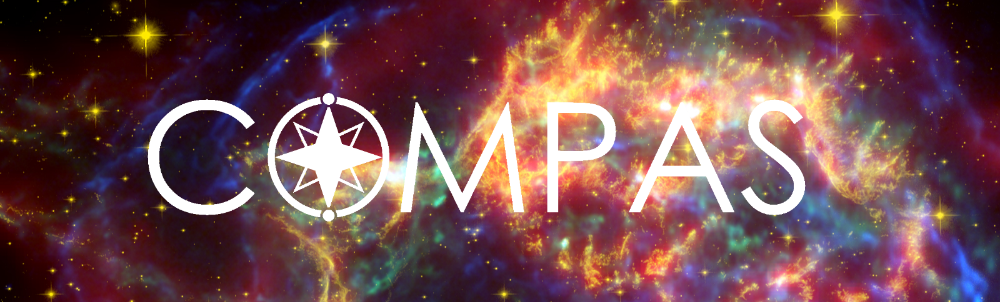
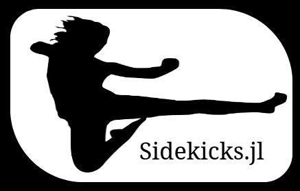

CV
Below is a brief overview of my CV. Full version.
Education
- 2023. Ph.D. in Binary Stellar Astrophysics, Monash University, Australia.
- 2012. B.Sc. in Mathematics & Physics, McGill University, Canada.
Research experience
- Sep 2023 – Current: Postdoctoral Researcher
- KU Leuven University, Belgium.
- Sponsors: Prof. Hugues Sana & Asst. Prof. Pablo Marchant (UGhent)
- Duties included:
- Research & software development
- Teaching & supervision of master’s and bachelors students
- Telescope operator
- Jan 2019 – Mar 2023: Ph.D. student
- Monash University, Australia
- Supervisor: Prof. Ilya Mandel
- Duties included:
- Research & software development
- Teaching assistant
Software I actively develop

- COMPAS: Rapid binary population synthesis

- Sidekicks.jl: Bayesian inference for inert black hole binaries